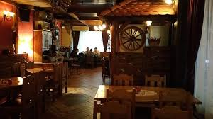
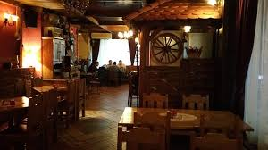

Restoran Dukat
Description: Restaurant Dukat is one of the best restaurants in the region. It's located in Bosnia across the border. The food is excellent, it's not expensive and the staff is friendly. We recommend trying Ćevapi or Lignje na žaru (grilled calamari) but whatever you choose you won't regret it.
Working hours:
Mon-Sun -> 07:00-24:00
Address: Nikole Pašića bb, Novi Grad - Bosanski Novi
Restoran Dukat
Opis: Restoran Dukat jedan je od najboljih restorana u regiji. Nalazi se u Bosni preko granice. Hrana je izvrsna, nije skupa, a osoblje je ljubazno. Preporučujemo da probate ćevape ili lignje na žaru, ali što god odaberete, nećete požaliti.
Radno vrijeme:
Pon-Ned -> 07:00-24:00
Adresa: Nikole Pašića bb, Novi Grad - Bosanski Novi
Restaurant Dukat
Beschreibung: Das Restaurant Dukat ist eines der besten Restaurants in der Region. Es liegt in Bosnien, über die Grenze. Das Essen ist ausgezeichnet, es ist nicht teuer und das Personal ist freundlich. Wir empfehlen Ćevapi oder Lignje na žaru (gegrillte Tintenfische) zu probieren, aber egal was Sie wählen, Sie werden es nicht bereuen.
Öffnungszeiten:
Mo-So -> 07:00-24:00
Adresse: Nikole Pašića bb, Novi Grad - Bosanski Novi
 
